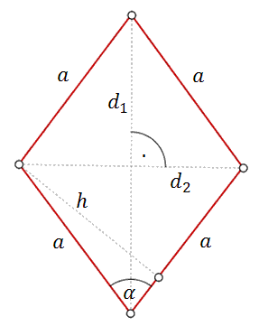

Romb
Romb - to czworokąt, który ma wszystkie boki równej długości. Przekątne rombu
przecinają się pod kątem prostym.

Wzór na obwód rombu: \[Ob=4a\]
Wzory na pole rombu: \[P=a\cdot h\\[6pt] P=a^2\sin \alpha \\[6pt]
P=\frac{d_1\cdot d_2}{2}\]
W rombie bok i krótsza przekątna mają taką samą długość, równą \(a\). Wówczas
dłuższa przekątna ma długość:
A.\( a\sqrt{2} \)
B.\( a\sqrt{3} \)
C.\( 2a \)
D.\( \frac{a\sqrt{3}}{2} \)
B
Bok rombu ma długość \(8\), a kąt ostry ma miarę \(60^\circ \). Wysokość tego rombu
jest więc równa 
A.\( 2\sqrt{3} \)
B.\( 4\sqrt{3} \)
C.\( 6\sqrt{3} \)
D.\( 8\sqrt{3} \)
B
Dany jest romb o boku długości \(4\) i kącie ostrym \(60^\circ\). Pole tego rombu
jest równe
A.\( 16\sqrt{3} \)
B.\( 16 \)
C.\( 8\sqrt{3} \)
D.\( 8 \)
C
Wysokość rombu o boku długości \(6\) i kącie ostrym \(60^\circ\) jest równa
A.\( 3\sqrt{3} \)
B.\( 3 \)
C.\( 6\sqrt{3} \)
D.\( 6 \)
A
Dany jest romb, którego kąt ostry ma miarę \(45^\circ\), a jego pole jest równe
\(50\sqrt{2}\). Oblicz wysokość tego rombu.
\(h=5\sqrt{2}\)
Pole rombu o obwodzie \(8\) jest równe \(1\). Kąt ostry tego rombu ma miarę
\(\alpha \). Wtedy
A.\( 29^\circ \lt \alpha \lt 30^\circ \)
B.\( 14^\circ \lt \alpha \lt 15^\circ \)
C.\( 75^\circ \lt \alpha \lt 76^\circ \)
D.\( 60^\circ \lt \alpha \lt 61^\circ \)
B
Pole rombu o boku \(6\) i kącie rozwartym \(150^\circ \) jest równe
A.\( 18\sqrt{2} \)
B.\( 18 \)
C.\( 36\sqrt{2} \)
D.\( 36 \)
B